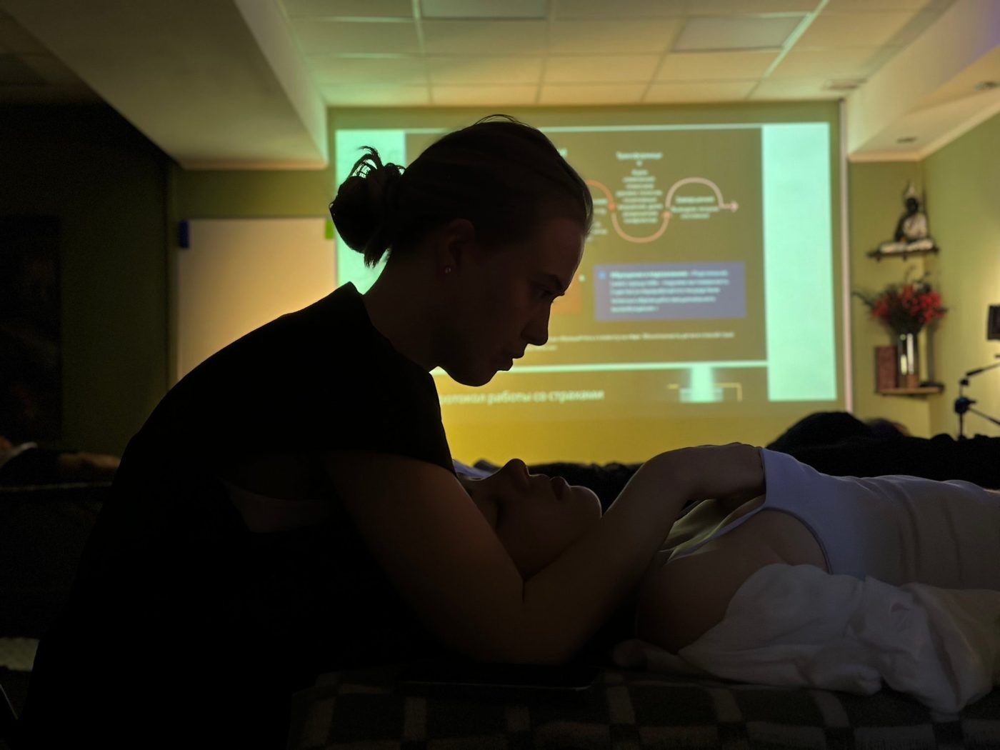
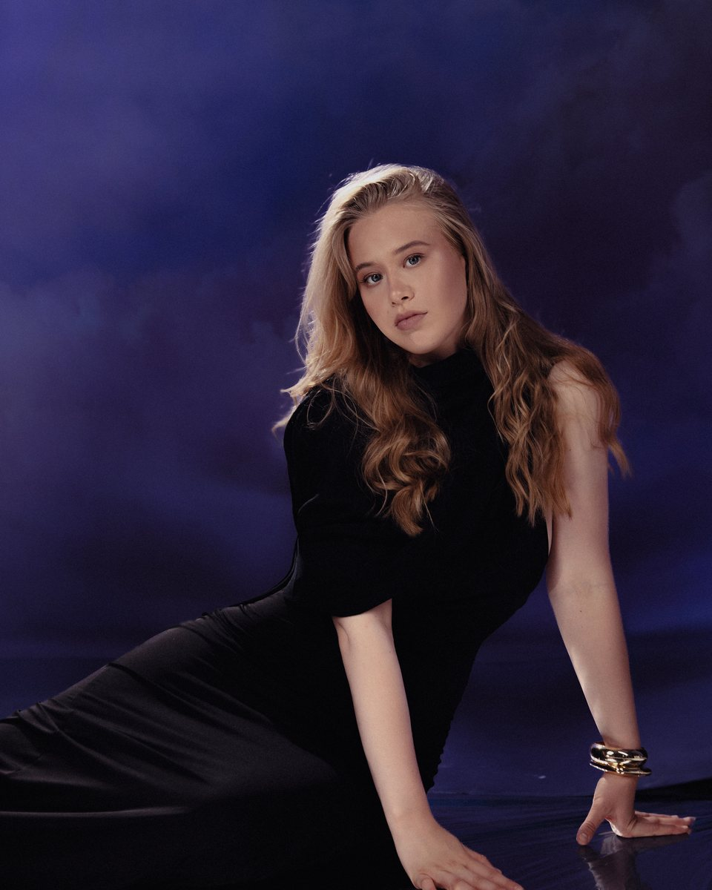

Открытая онлайн-встреча
Одна тема, разбор вопросов и общая практика в конце. Подходит, чтобы присмотреться из любого города.
Телесно-ориентированный подход
Через тело находим, где застряло напряжение, и разбираемся, какие обстоятельства его сформировали. Вживую, когда я приезжаю в Москву, Казань, Уфу, Альметьевск и Дубай, или онлайн из любой точки мира.

Даты
Даты приездов появляются здесь примерно за месяц. Запись в каждом городе открыта несколько дней. Адрес присылаю после записи.
Нажмите «Сообщить о дате» у своего города, и вы узнаете о приезде первыми.
С чем приходят
Работаю со всеми, кто готов посмотреть на свою ситуацию и что-то в ней поменять. Темы открытых встреч подбираю по самому частому вопросу подписчиков канала.
Форматы
Одна тема, разбор вопросов и общая практика в конце. Подходит, чтобы присмотреться из любого города.
Личная встреча на 2 часа в Телемосте или Zoom, если вы в другом городе или хотите разобрать конкретную ситуацию.
Встреча и работа руками. Тело показывает, где накопилось напряжение, а дальше мы вместе смотрим на обстоятельства, которые его создали.
Для двоих, которые вместе разбираются в общем вопросе. Чаще всего это мужчина и женщина.
Три дня на природе. Прошлый ретрит проходил 24–26 июля 2026 на турбазе «Берёзка» у озера Талкас в Башкортостане.
Подбор
Два вопроса, и станет понятно, какой формат подойдёт сейчас.
Как это устроено
Я работаю в телесно-ориентированном подходе и опираюсь на идеи Вильгельма Райха. Непрожитые чувства и привычные способы защищаться остаются в теле мышечным напряжением. Через тело мы находим это напряжение, а в разговоре понимаем, откуда оно взялось. Осознать мало: важно, чтобы тело это прожило.

В Telegram или по телефону, в свободной форме.
Договариваемся о формате и дате в вашем городе или онлайн. Адрес присылаю после записи.
1,5–2 часа. Находим телесный зажим, проживаем его и смотрим, что его сформировало.
Встречая прежнюю ситуацию, вы можете отреагировать на неё иначе.

Обо мне
До телесной терапии я работала учителем в частной школе. Дети научили меня главному: объяснить тему мало, её нужно прорешать много раз, и тогда знание становится своим. С психикой так же: осознать мало, нужно прожить.
Я проводила для женщин тренинги и игры с метафорическими картами и увидела, что одного разговора не хватает. Психика защищается, а страхи, обиды, тревога и недоверие остаются в теле. Так я пришла к обучению телесной терапии и ушла из школы в практику.
С 2024 года работаю с людьми, веду канал «От сердца к сердцу», провожу открытые встречи онлайн и приезжаю в Москву, Казань, Уфу, Альметьевск и Дубай.
«Нет ничего, что человек не может. Есть только то, что он считает, будто не может»
Отзывы
Слова клиентов из личных сообщений, как они есть. Имена не указываем.
«Когда увидела тебя, подумала, такая молодая и хрупкая, и в то же время, мощная сила внутри и невероятная чистота. В процессе сеанса прочувствовала силу рук, что было для меня неожиданно. Такое ощущение после сеанса, как будто что-то очень поменялось внутри.»
«Два дня спала, стало как-то легко и главное — ком в горле прошел и стало легче дышать. Что-то внутри меняется, как ты и сказала. Пытаюсь услышать себя, а не свой ум.»
«Телесная терапия — очень мощный инструмент. Но все зависит от того, кто проводит. Удивительно, но после чувствую обновление, силу и любовь к миру. Ты помогла раскрыть многие моменты и понять суть простых вещей.»
«Диана, внешне ты молоденькая хрупкая девушка! Голос тихий, сияющая улыбка… Силища и божественная наполненность удивили меня! Ты как будто сняла с меня старую изношенную, уставшую кожу, а новая — ещё чистая и молодая! Анализирую! Учусь заботиться о себе!»
«Диана, я начала вновь чувствовать, я начала вновь делать людям добро! Я чувствую и могу ясно выразить все свои истинные эмоции по отношению к людям.»
«Благодарю, моя дорогая за четкое разделение, четкое разъяснение — за мои изменения, которые мне помогают жить!»
Вопросы
Даты приездов в Москву, Казань, Уфу, Альметьевск и Дубай публикую примерно за месяц. Оставьте контакт и город, и я напишу, как только откроется запись.
Да, онлайн-консультация идёт 2 часа в Телемосте или Zoom из любой точки мира. Можно начать и с открытой онлайн-встречи за 1000 ₽.
На живой встрече работа идёт через тело и прикосновение, она длится 1,5–2 часа. Консультация проходит онлайн и длится 2 часа.
Родственников можно привести, но с каждым я работаю отдельно. Если вы пара и хотите вместе разобраться в общем вопросе, есть встреча для двоих за 10 000 ₽.
Скажите об этом заранее, при записи. Психотропные препараты важно учитывать в работе.
Напишите мне в Telegram, и я пришлю ссылку. Участие стоит 1000 ₽, время указывается по Москве.
Нет. Если у вас есть диагноз или тревожные симптомы, обратитесь к врачу и продолжайте назначенное лечение.
Перед встречей
На настоящем сайте здесь будет подтверждение заявки. В прототипе данные никуда не отправились.